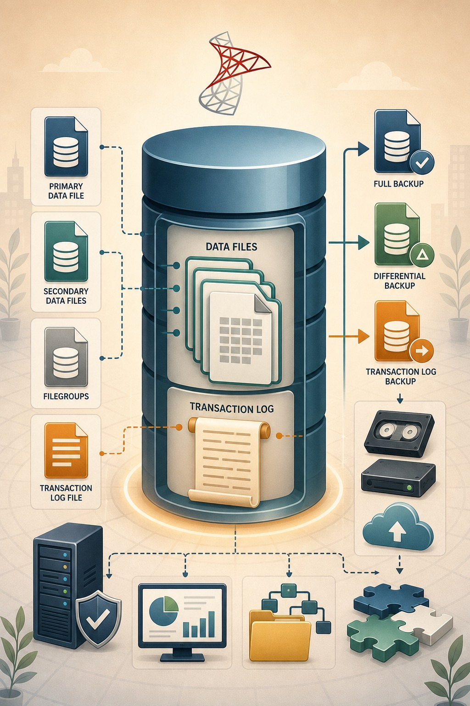
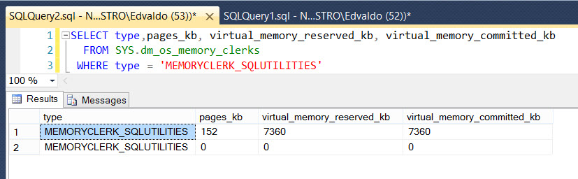

Introdução:
dNo SQL Server existem diversos tipos de backups que possuem finalidades e possibilidades diferentes entre si. Os principais são "Backup Full", "Backup Diferencial" e "Transaction Log Backup".
Neste artigo, será tratado basicamente e detalhadamente o funcionamento do "Backup Full", para fins de conhecimento das operações que a engine do SQL Server executa durante todo o tempo de execução deste tipo de backup.
Como exemplo, foi utilizado o banco de dados nativo de testes do SQL Server (AdventureWorks).
d
O Backup Full
dO backup full consiste em uma cópia exata e completa de tudo o que está no banco de dados em um determinado momento acrescido da porção ativa do log de transações (transações que ocorreram durante a execução do procedimento de backup).
O único momento no tempo possível para restauração deste tipo de backup, é o momento da conclusão do mesmo, sendo assim o backup full por si só não garante a possibilidade de que não haja perda de dados.
d
Qual o tamanho do backup?
dExistem algumas confusões quando se fala em espaço ocupado e sizing, tanto do banco de dados quanto relacionado aos backups. O SQL Server armazena os dados em páginas de 8 KB agrupados de oito em oito, formando os "EXTENTS", cada EXTENT tem o tamanho de 64KB. O SQL Server armazena estes Extents no arquivo de dados de cada banco, que normalmente possui as extensões .MDF (arquivo de dados primário) ou .NDF (arquivo(s) de dados secundário(s)).
Ao ser criado o banco de dados, ou quando não há mais espaço suficiente, o arquivo é alocado em disco, de acordo com o tamanho previamente informado. Este arquivo não está necessariamente, completamente utilizado, pois o SQL Server vai alocando os EXTENTS à medida que o banco vai sendo utilizado. O tamanho do backup será basicamente a soma dos extents que tem pelo menos uma página de dados alocada.
Exemplo:
y{kind=link}

yDetalhes da imagem:
d
- 9 extents * 64 KB = 576 KB
- 5 extents (utilizados) * 64 KB = 320 KB
- 4 extents (livres) * 64 KB = 256 KB
A imagem acima mostra um exemplo de arquivo de dados com um tamanho de 576 KB, sendo que 5 extents tem pelo menos uma página alocada e 4 estão vazios.
BACKUP DATABASE AdventureWorks2014TO DISK = 'C:TEMPBackup_AdventureWorks2014_FULL.bak'Ao submeter o comando ou clicar no botão "ok" na interface gráfica para executar um backup, TODOS os extents que tenham pelo menos uma página de dados alocadas serão copiados para o arquivo de backup, usualmente com a extensão ".BAK". Sendo assim o tamanho final do backup será a soma do total de extents com pelo menos uma página alocada (neste caso 320 KB) + o tamanho do backup da porção ativa do log de transações.
d
Área de memória utilizada
dO SQL Server possui diversas áreas de memória para alocação temporária de páginas de dados, plan cache, procedures e outros... A principal destas áreas de memória é o data cache, que é a área de memória utilizadas quando há a submissão de um select em que as páginas com os dados solicitados está em disco e não em memória.
O processo de backup acontece de forma diferente, pois apesar de ter que ler TODAS as páginas (extents) de dados da base que está sendo copiada, ele utiliza-se de uma área de memória específica para este fim, não impactando diretamente o processamento natural do DATA CACHE na utilização do banco de dados durante o processo de backup.
O SQL Server utiliza-se do MEMORY MANAGER, que através do MEMORY_CLERK "MEMORYCLERK_SQLUTILITIES" faz a alocação de memória necessária para a execução do Backup, e esta porção de memória permanece alocada somente durante esta execução.
Para consultar os memory clerks, basta executar a consulta abaixo:
d
SELECT * FROM sys.dm_os_memory_clerks
d
É possível também verificar em tempo de execução do backup, quanto de memória está sendo utilizado pelo mesmo, consultando a mesma sys.dm_os_memory_clerks .
Abaixo uma query que pode ajudar e tornar as coisas um pouco mais claras...
y
SELECTtype ,pages_kb ,virtual_memory_reserved_kb ,virtual_memory_committed_kb
FROM sys.dm_os_memory_clerks WHERE type = 'MEMORYCLERK_SQLUTILITIES' y
y
A imagem acima, exibe a execução de um "backup full" da base de dados [AdventureWorks2014]
y

y
A imagem acima, mostra que a execução do backup da base de dados [AdventureWorks2014] gerou um espaço de memória alocado de 7360KB ou aproximadamente 7MB de memória utilizado para a execução deste backup. O tamanho utilizado por este MEMORY_CLERK durante a execução do backup, influencia diretamente na duração do backup, pois quanto menor o virtual_memory_reserved_kb e virtual_memory_commited_kb, mais vezes o SQL Server terá que escrever em disco com porções menores.
A performance do backup pode ser consideravelmente melhorada com a alteração de alguns parâmetros no comando de backup (BUFFERCOUNT e MAXTRANSFERSIZE ), fazendo com que o espaço utilizado por este CLERK seja maior e consequentemente o SQL Server escreverá menos vezes em disco, com uma porção maior de dados.
y
BufferCount:
Especifica o número total de buffers de I/O que serão utilizados em operações deste backup que está sendo executado. Para este parâmetro, pode ser especificado qualquer número inteiro positivo.
y
C U I D A D O
Uma configuração incorreta com um número muito alto de buffers, pode resultar em erro de
"Out of Memory"
y
MaxTransferSize:
Especifica a maior unidade de transferência (em bytes) que será utilizada entre o SQL Server e a mídia de backup (o disco, por exemplo). Os valores devem ser múltiplos de 64KB (65536 Bytes) até o limite de 4MB (4194304 Bytes).
O espaço total utilizado pelos buffers é determinado pelo cálculo:
y
Total_Espace = BufferCount * MaxTransferSize
y
Trace Flags (TF)
yLembrete: Utilize os Trace Flags por sua conta e risco.
Existem alguns traceflags que podem ser muito úteis para obtenção de informações sobre as operações de Backup / Restore.
Abaixo uma pequena lista dos principais e suas principais funções: y- 3604
- Este Trace Flag é necessário para exibição do resultado de alguns outros TF.
- 3014
- Utilizado para fornecer maiores informações detalhadas sobre as operações de Backup / Restore
- 3226
- Omite do Error Log do SQL Server, as entradas contendo informações de sucesso de backups realizados. Vale lembrar que operações de backup com falha ainda continuam sendo escritas no Error Log.
- 3004
- Exibe informações detalhadas sobre o que está acontecendo entre o SQL Server e a mídia de backup. Este TraceFlag também mostra informações sobre o processos que escrevem em disco, como por exemplo o "Instant File Inicialization"
{kind=link}
- 3213
- Exibe informações referentes ao Backup que está sendo executado executado. Útil para exibição das configurações dos parâmetros supracitados.

y
Análise da execução de um Backup Full
yNo trecho abaixo, será explicado detalhadamente os pontos mais importantes que ocorrem durante a exeução de um Backup Full.
/*------------------------DBCC TRACEON (3604,3014)BACKUP DATABASE AdventureWorks2014 TO DISK = 'C:tempAdventureWorks2014.bak'------------------------*/-- Comando de Backup submetido ao SQL Server.DBCC execution completed. If DBCC printed error messages, contact your system administrator. -- Primeira parte - Coleta de Informações acerca dos parâmetros e da operação a ser executada. BackupDatabase: Database AdventureWorks2014--Nome do banco de dados a ser copiado Backup: Media open--estado da mídia (neste momento é feito a validação de acesso ao caminho onde o backup será salvo, e caso de falha, é exibido o erro de "access denied" no destino) Backup/Restore buffer configuration parametersMemory limit: 377MBBufferCount: 7--Quantidade de buffers a serem utilizados para esta operação de Backup. (Valor default = 7) Sets Of Buffers: 1MaxTransferSize: 1024 KB-- Tamanho máximo de cada transferência durante o flush do buffer para o disco.Min MaxTransferSize: 64 KB-- Tamanho mínimo a ser transferido durante o flush de dados do buffer para o disco. Total buffer space: 7 MB-- Tamanho total utilizado por esta operação de backup no MEMORYCLERK_SQLUTILITIES. Conforme já mencionado, este valor é o resultado da operação:-- BufferCount (7) * MaxTransferSize(1024KB) = 7MB Tabular data device count: 1Fulltext data device count: 0Filestream device count: 0TXF device count: 0Filesystem i/o alignment: 512Media Buffer count: 7Media Buffer size: 1024KBBackup: Media ready to backup-- A "media" de backup está pronta para ser utilizada (neste caso o disco) Backup: Clearing differential bitmaps-- Neste ponto realizando a limpeza da DCM (Differential Change Map), que armazena informações das páginas alteradas deste o último Backup Full, para fins de controle do backup Differential. Backup: Bitmaps clearedBackupDatabase: Checkpoint done-- Realização de Checkpoint para iniciar o processo de backup . BackupManager::SyncWithLog: SEReplLSN : 0 (0x00000000:00000000:0000)BackupManager::SyncWithLog: Start LSN : 1070000000040800024 (0x0000042e:00000198:0018)--Marca do LSN que será o início deste backlup.Backup: Scanning allocation bitmapsBackup: Done with allocation bitmaps-- Neste ponto está sendo feito um scan para validar quais extents possuem páginas alocadas para serem copiados para o arquivo de backup. Conforme previamente mencionado, a estrutura alocada porém não utilizada, não será copiada, apenas os extents que possuam pelo menos uma página de dados alocada. Calculating expected total data to writeFid(1) ExpectedExt(3028) DiffMapAccurate(0)Total (198443008)BackupDatabase: Work estimates done-- Neste ponto o SQL Server já fez o scan e localizou 3028 extents a serem copiados. Multiplicando-os por 64KB (que é o tamanho de 1 extent) chegou ao valor total esperado de 198443008 Bytes (Aprox. 194 MB) a serem escritos em disco. Backup: Leading metadata section doneCalculating expected total data to writeFid(1) ExpectedExt(3028) DiffMapAccurate(0)Total (198443008)-- Neste ponto o SQL Server já fez o scan e localizou 3028 extents a serem copiados. Multiplicando-os por 64KB (que é o tamanho de 1 extent) chegou ao valor total esperado de 198443008 Bytes (Aprox. 194 MB) a serem escritos em disco. Backup:Copying data--Neste ponto o SQL Server já começou a copiar os dados, fazendo leitura dos extents que estão no arquivo .MDF (em disco), salvando em buffer (MEMORYCLERK_SQLUTILITIES) e em seguida escrevendo no destino (geralmente disco, arquivo .BAK) Backup: DBReaderCount = 1Backup data streams: Initial=198443008 Final=198443008 ExcessMode=0Calculating expected total data to writeFid(1) ExpectedExt(3028) DiffMapAccurate(0)Total (198443008)BackupDatabase: Database files done-- Término do processo de cópia dos extents do arquivo de dados. Processed 24224 pages for database 'AdventureWorks2014', file 'AdventureWorks2014_Data' on file 12.-- Informações sobre a quantidade de páginas e o banco de dados que foi copiado para o arquivo de destino (geralmente .BAK) Backup:Copying log-- Informação que o SQL Server está copiando a porção ativa do log de transações. Esta porção ativa, trata-se de uma cópia "copy_only" do log das transações que ocorreram após o "checkpoint" inicial do backup, e que é necessária para garantir a consistência do backup no ponto do término do mesmo. BackupLog: Family(0) StreamSize=0x10000BackupLog: Family(0) StreamSize=0x0Processed 1 pages for database 'AdventureWorks2014', file 'AdventureWorks2014_Log' on file 12.BackupDatabase : Log files done-- Informação sobre a porção de log que foi copiada, informando inclusive que foi copiada do arquivo de log de transações do banco em questão "file 'AdventureWorks2014_Log' " Backup: Trailing config doneBackup: MBC doneBackupDatabase: Writing history recordsWriting backup history records-- Neste ponto o SQL Server faz o registro da execução deste backup nas tabelas de sistemas e metadados no banco MSDB, para fins de histórico e informações das operações de BACKUP / RESTORE realizados. BACKUP DATABASE successfully processed 24225 pages in 1.999 seconds (94.675 MB/sec).-- Informação de sucesso da execução do backup, informando a quantidade de páginas copiadas, tempo total gasto neste processo e o throughput (94.675 MB/sec). BackupDatabase: Finished-- Backup concluido com sucesso!Basicamente estas são as ações realizadas pelo SQL Server durante a execução de um Backup Full.
y
Grande Abraço,
Edvaldo Castro
y
Referências:
Create a Full Database Backup (SQL Server)
http://msdn.microsoft.com/en-us/library/ms187510.aspx
Backup (Transact-SQL)
http://technet.microsoft.com/en-us/library/ms186865(v=sql.120).aspx
Trace Flags
http://social.technet.microsoft.com/wiki/contents/articles/13105.trace-flags-in-sql-server.aspx
Entendendo e melhorando a performance de seus backups
http://magalhaesv.wordpress.com/2011/05/24/entendendo-e-melhorando-a-performance-de-seus-backups/